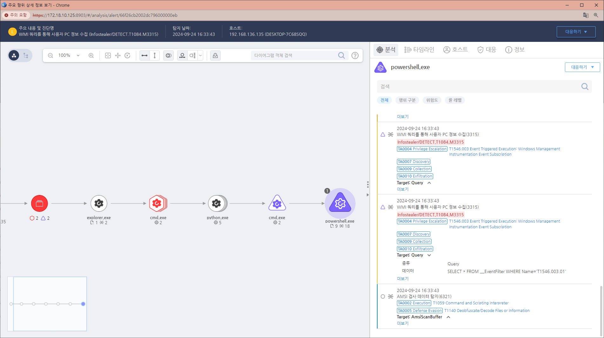

T1546.003.01 Windows Management Instrumentation Event Subscription
D3FEND
MITRE ATT&CK 액션을 기준으로 대응 방안을 작성
Detection
Action : wmi-call AND wmi-data : "__EventFilter"
Detection(EDR)

Response
해당 행위를 수행한 프로세스를 종료합니다.
공격자에 의해 PC가 제어되었을 가능성이 있으므로 호스트 네트워크를 격리합니다.
공격자 C&C 서버로 추정되는 주소를 차단합니다.
Mitigations
Application Control
- AppLocker 또는 Windows Defender Application Control (WDAC)와 같은 응용 프로그램 제어 솔루션을 사용하여 관리자가 허가하지 않은 프로그램과 스크립트의 실행을 제한할 수 있습니다.
- 이 방법은 WMI에 의해 시작될 수 있는 악성 스크립트를 제한하는 데 도움이 됩니다.
WMI 권한 관리
- WMI 이벤트 구독을 사용하려면 관리 권한이 필요합니다.
- 따라서 WMI 사용 권한을 제한하고, WMI 액세스가 필요한 사용자를 최소화함으로써 악성 구독을 설정하지 못하도록 할 수 있습니다.
- WMI 접근을 필요로 하지 않는 사용자 계정에서 WMI 사용 권한을 제거하는 것이 효과적입니다.
정기적인 모니터링 및 감사
- WMI Event Subscription을 정기적으로 감사하여 불필요하거나 악성으로 보이는 이벤트 구독을 탐지하고 제거할 수 있습니다.
- 이를 위해 Event Viewer나 PowerShell을 통해 WMI 구독을 모니터링하는 스크립트를 실행할 수 있습니다.
- 이벤트 로그에서 Event ID 5861 또는 WMI Object Access 이벤트를 감시하는 것이 좋습니다.
레지스트리 모니터링
- WMI Event Subscription은 레지스트리에 기록됩니다.
- 이를 정기적으로 확인하거나 변경 사항을 모니터링하는 것도 좋은 방어책입니다.
- HKEYLOCALMACHINE\SOFTWARE\Microsoft\WBEM\CIMOM\Subscriptions 경로를 감시하면 WMI 구독 정보를 확인할 수 있습니다.
PowerShell 제한
- WMI 이벤트는 종종 PowerShell과 함께 악용됩니다.
- 따라서 PowerShell의 실행 정책을 제한하거나 서명된 스크립트만 실행되도록 설정하는 것이 악성 PowerShell 코드의 실행을 방지하는 데 도움이 됩니다.
취약점 패치 및 보안 설정 강화
- 운영 체제를 최신 상태로 유지하고, WMI와 관련된 보안 취약점 패치를 적용하여 악용 가능성을 줄입니다.
- 최신 보안 업데이트를 적용하면 WMI의 악성 사용 가능성을 낮출 수 있습니다.
Affected Techniques
Action 실행시 함꼐 영향을 받는 다른 Techniqes
| D3FEND |
| D3-SCA System Call Analysis |